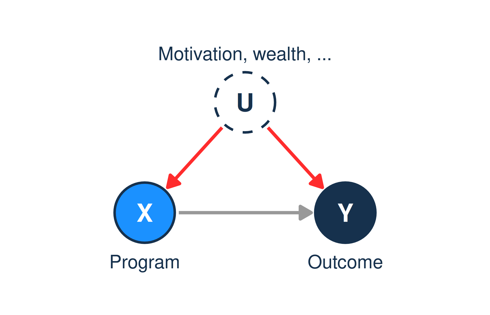
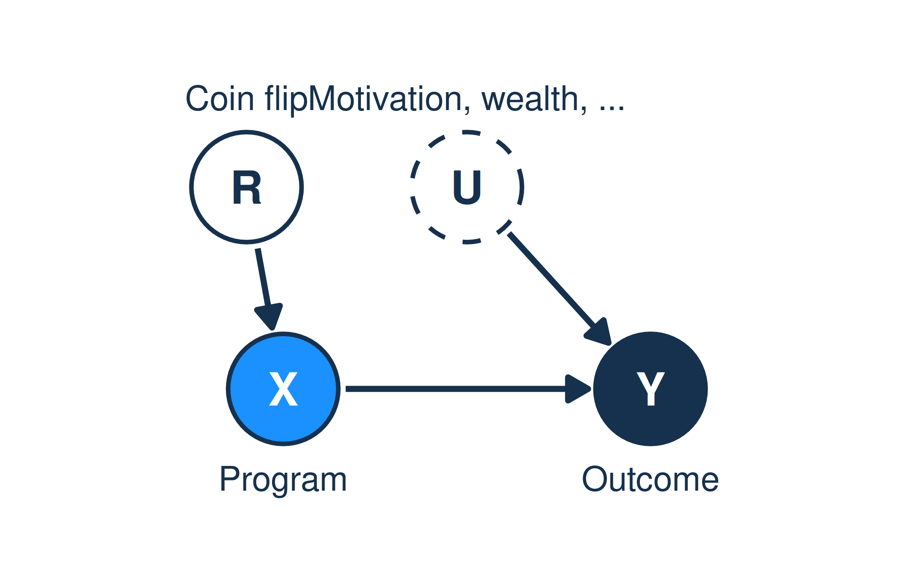

Data Lunch: Week 5
Reading a finding, asking a question
Should we act on this?
“[Headline goes here]”
- Hands up: would you fund a program based on this?
- Keep your answer. We’ll vote again at the end of Part 1.
Last four weeks → this week
- Week 1: P(A|B) ≠ P(B|A). Surprising findings are usually false.
- Week 2: Describe numbers by distributions. Coefficients have units.
- Week 3: Seeing ≠ doing. The DAG decides which number answers your question.
- Week 4: Forks, pipes, colliders. Holding the wrong thing fixed creates paradoxes.
- This week: put it together, from both sides of an analysis.
Goals this week
- Part 1: Evaluating someone else’s finding
- Seven questions to ask of any claim
- Worked case: bicycles for girls in Bihar
- Part 2: Asking your own question
- From a decision to an estimand
- The target trial: the experiment you wish you could run
- Part 3: Applied
- Critique a study, design an estimand, revisit your project
Part 1: Evaluating a finding
Seven questions
Seven questions
- What exactly is the claim?
- What did they actually measure?
- How was the data made?
- What’s in their DAG, and what’s in their model?
- Who is it about?
- How big, and how sure?
- How plausible was it before?
Every one of these comes from a week you’ve already done, except one or two new pieces.
1. What exactly is the claim?
Descriptive
How much? How many?
“38% of Kathmandu voters support the mayor.”
Predictive
What will happen?
“The mayor will probably win.”
Causal
What if we intervened?
“Free school meals raise attendance.”
- Each kind needs different evidence. Causal claims need the most.
- Watch the verbs: boosts, drives, leads to, protects against are causal claims, even when the study was only able to support a descriptive one.
- Exercise: rewrite the headline as an estimand. Is it seeing or doing? (Week 3)
2. What did they actually measure?
- The concept in the headline vs. the variable in the data.
- “Education” → years of schooling? enrollment? test scores?
- “Women’s college enrollment (% gross)”: can exceed 100%. Why?
- Proxies are descendants: they carry the concept only partly. (Week 4)
- Missing data: who didn’t answer, and why? Missingness is often selection on a collider.
- Measured once, or tracked over time? Self-reported, or observed?
3. How was the data made?
Observational: people chose X. Everything that drove that choice is a possible back door.

Randomized: a coin flip chose X. Every arrow into X is deleted. This is do(X) done physically.
Between the extremes
- Randomized experiments: strongest for “does it work here, for these people?”
- Natural experiments: something like a coin flip (a lottery, a cutoff, a border, a policy rollout date).
- Before / after, with a comparison group: works if the groups would have moved together without the program.
- Cross-sectional comparison: one snapshot, many back doors. Everything in Week 4 applies.
Ask: “What decided who got X?” If the answer is “people chose,” start drawing back doors.
4. What’s in their DAG, and what’s in their model?
Most reports never draw a DAG. Draw it for them.
- Which forks did they control for? Which did they miss?
- Did they control for a mediator, hiding the effect? (“after adjusting for…”)
- Did they select on a collider? (“among patients,” “among graduates,” “among funded firms”)
The phrase “after controlling for…” is the most important sentence in the methods section. Check every variable in that list against your DAG. (Week 4)
5. Who is it about?
- Sample vs. population: who was studied, and who are you making a decision for?
- Would it work here? Different place, time, prices, institutions, baseline rates.
- Average vs. everyone: an average effect can hide people it hurts.
Ecological fallacy
Countries with more X have more Y does not mean people with more X have more Y.
Your projects use country-level data. What can they say about individual women, households, students?
6. How big, and how sure?
How big
- Translate into units that matter for the decision: rupees, students, lives per 10,000.
- Relative vs. absolute: “doubles your risk” from 1 in 10,000 to 2 in 10,000 is one extra case per 10,000 people.
- Compare to the cost, and to the alternatives.
How sure
- Look at the range of plausible values, not just the middle.
- Does the decision change anywhere in that range?
- If the range runs from “large benefit” to “slight harm,” you don’t know yet. That is a finding too.
Reading a table you’re handed
Most reports you’ll read aren’t Bayesian. You can still read them.
| Estimate | Std. error | ||
|---|---|---|---|
| Program | 0.42 | 0.15 | ** |
| Household income (log) | 1.10 | 0.30 | *** |
| Distance to school (km) | −0.08 | 0.06 |
- Rough plausible range: estimate ± 2 × std. error.
- Program: 0.12 to 0.72.
- Stars only tell you whether that range crosses zero. Ignore them; read the range.
- “Not significant” ≠ “no effect.” Distance: -0.20 to 0.04. That’s uncertain, not zero.
- Then go back to question 4: why is household income in this model?
7. How plausible was it before?
- Back to Week 1: P( true | significant ) depends on the base rate.
- Warning signs:
- The finding is surprising, cheap, and convenient.
- Small sample, large effect.
- Many outcomes measured, one reported.
- Selected for publication or press (a collider). (Week 4)
- Replications and pre-registration raise the base rate.
Extraordinary claims need more than one study.
Worked case: bicycles for girls
Muralidharan & Prakash (2017), Cycling to School, AEJ: Applied
The claim
- Program: Bihar gave girls entering secondary school money for a bicycle (2006–).
- Finding: girls’ secondary enrollment rose substantially; the gender gap narrowed.
- Should Madhesh Province copy it?
Seven questions, applied
| Question | Bihar bicycles |
|---|---|
| 1. Claim | |
| 2. Measured | |
| 3. Design | |
| 4. DAG / model | |
| 5. Who | |
| 6. Size / certainty | |
| 7. Prior plausibility |
Vote again: would you fund it in Madhesh? What would you need to know first?
Part 1: Summary
- Claim: descriptive, predictive or causal? Seeing or doing?
- Measure: does the variable mean what the headline says?
- Design: what decided who got X?
- DAG: what did they control for, and should they have?
- Who: whose data, and whose decision?
- Size & certainty: in decision units, as a range.
- Prior: how surprising, and how many tries?
Part 2: Asking your own question
Start from the decision, not the data
Start with the decision
- What will you do differently depending on the answer?
- If the answer is high, you’ll . If it’s low, you’ll .
- If both blanks say the same thing, don’t do the analysis.
“What do the data say about education?” is not a question. “Should we fund transport for girls in grades 9–10 in this district?” is.
Building an estimand
Estimand template
Among [population], what is the [summary] of [outcome] after [time], if [intervention] compared to [alternative]?
| Piece | Example |
|---|---|
| Population | Girls finishing grade 8 in rural Madhesh |
| Outcome | Enrolled in grade 9 |
| Intervention | Bicycle provided |
| Compared to what | No program (or: a cash transfer of the same value) |
| Time | One year later |
| Summary | Difference in share enrolled |
- The comparison is the part people forget. “Effect of X” always means “X compared to what?”
The target trial
If you could run any experiment, what would it be?
- Who would you randomize? To what? Measured when?
- This is the estimand made concrete.
- Then compare it with the data you actually have.
- Every gap between the two is a limitation, named before you see results.
| Ideal experiment | Data we have | Gap |
|---|---|---|
From estimand to data
- Draw the DAG for your estimand. (Weeks 3–4)
- Which variables must you measure to close the back doors?
- Can you measure them? If not, which design gets around them? (Question 3)
- Who needs to be in the sample for the answer to apply to your decision? (Question 5)
- How precise does the answer need to be to change the decision?
Is it worth finding out?
- If every plausible answer leads to the same decision, the data has no value to you.
- If the decision is expensive and hard to reverse, precision is worth paying for.
- Sometimes the best decision is a small pilot, designed as an experiment.
Part 2: Summary
- Start from the decision. If no answer would change it, stop.
- Write the estimand: population, outcome, intervention, comparison, time, summary.
- Imagine the target trial. Its gaps with your data are your limitations.
- The DAG says what to measure. The decision says how precise it needs to be.
Part 3: Applied
Round 1: Critique
In groups, take one study summary and answer the seven questions.
- Which question was hardest to answer from what they reported?
- What’s the one thing you’d need to know before acting?
Round 2: Design
Each group gets a decision. Write:
- The decision and what each answer would change.
- The estimand, using the template.
- The target trial.
- The data you could realistically get, and the gaps.
Your project
- Rewrite your project’s question using the estimand template.
- What is your target trial? How far is World Bank 2022 data from it?
- List your scope limits:
- One year, cross-sectional
- Country-level: what can you say about individuals?
- Measurement: does each variable mean what its label says?
- Which of the seven questions would a skeptic ask you first?
Homework
A one-page critique memo on a real report or finding from your own work.
- Organized by the seven questions.
- Ends with: “What I’d need to see before acting on this.”